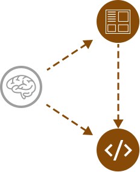
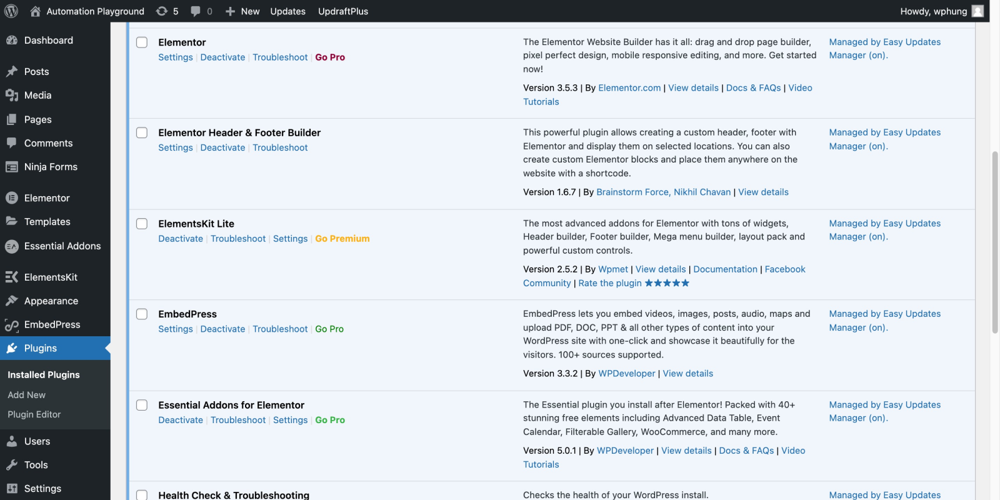

Automation Playground is a research subgroup of UC San Diego's Design Lab.
Helped to spearhead a web design project to showcase the research group for the former founder.
Key Takeaways
I led a small group of two students to implement a website, from project conception to documentation handoff.
Combined co-founders' feedback, teammates' considerations for project priorities, and online inspiration to inform website improvements, execution, and documentation.
Project Background
What is Automation Playground?
Automation Playground is a research group within the Design Lab at University of California - San Diego, centered around research efforts in transportation, autonomous vehicles and systems, and healthcare to name a few.
The former founder wanted me and a couple of students to develop a WordPress website dedicated to showcasing the research group's work and research philosophy.
Work Environment
Minimal supervision from the founder.
Many possible project directions towards successful website implementation.
First time learning WordPress.
Research was mainly literature review due to confidentiality of research group's projects.
Tentative status on publishable content for group's case studies.
People Who I Worked With
Research Group Co-Founders - Colleen Emmenegger & Deborah Forster
Student Members - Sahba Mobini, Cang Le, Brian Han
Systems Administrator - Silas Horton Provided WordPress admin access and customer support to our team members
Web Design Process
Emphasis on ideation, prototyping, and implementation of the website.
Continuous feedback from founder informed website direction and changes.
If more time, permissions, and resources were allowed, user experience research methods would be incorporated to recruit, screen, and interview people that the co-founders
Project Monitoring
I created a Google Doc and a spreadsheet to explain to prospective members of the research group the following: project background, current tasks, roles, and responsibilities.
Initially, a slide deck was used for communicating updates to the founder in a digestible manner.
Led meetings with team members and/or co-founders to address project topics, document changed priorities, and review action items via Google Docs and Asana.
Ideation
Early draft of the website's information architecture informed what aspects of the research group can be showcased, as well as what kind of interfaces should be experimented.
Initial information architecture of the website.
Initial website prototypes had visual style guides and interface components inspired by the Design Lab website.
Prototyping
Spearheaded the interface design and website implementation for all website prototypes.

Version 1 of website interfaces done in Figma (desktop), introductory content in the top portion of the webpage and tabbed content: research group members, list of projects, and motivational content for prospective visitors.
Version 2 of website interfaces done in Figma (mobile).
From left to right: landing page, list of projects, and explanation of research group and members.
Website Development
Students and I learned and applied Wordpress plugins from the admin dashboard to develop the website (content, layout, etc.).
List of plugins within WordPress admin interface. Elementor and its plugin variations had website editor interfaces to construct webpages.

Feedback & Iterations
Screenshots, annotations, and analysis of online inspirations informed organization and structure of website in later prototypes and versions. Documentation done in Figma.
Although my other group members ideated a different color scheme to improve website aesthetics, the founder preferred use of blue and a simple visual design implementation. The founder's additional feedback and suggested changes informed future website iterations and priorities.
Webpages of the fifth website version. From left to right: Explanation of group's research and design philosophy, email form submission for research group contacting, and viewable publications.
To better templatize interface components for faster web development, an updated visual style guide was implemented as a private page within a WordPress plugin called Elementor.
Height and padding details for a title banner and text above the fold.Image below shows 3-column layout of images, text, and buttons as well as padding values for desktop and mobile screens.
Website Updates After Project Handoff
Long after official project handoff, I resolved an issue with Silas on the website's Wordpress theme crashing and made more changes to the spacing issues and layout components for the website pages.
Critical error message after updating a Wordpress theme.
Added a 404 error page.
Website Developed
Landing page on Desktop View
Landing page has a sticky navigation header, long title banner, and website section summaries.
List of Projects
Each project has: title, tagline, description, call-to-action button to read more, and image.
About the Research Group
Explaining Automation Playground's background and projects approaches from design and research perspectives.
Member Showcase
Gallery of people, each with defined roles, involvement, disciplines, and background.
Involvement
Contact form for potential followups from visitors to the research group.
Publications
Two posters and one paper of research group's case studies.
404 Error Page
Should an error occur, there is a button to the landing page, a helpful message, and links to other website pages.
Project Documentation
The founder reviewed and approved two slides decks that one student member and I made. I provided a majority of the content, images, and hyperlinks.
First slide deck. High level introduction to the project.Second slide deck. Explained the digital workspaces, resources, and insights behind the website.
Reflection
I learned about how important a visual style guide was and how simplifying content and layout requirements eased the project difficulty and testability of assumptions for the founder's requirements and preferences.
The following explains next steps if there was more time, attention, and resources:
Content completion of case studies from the research group's individual projects.
Execution of user research techniques, such as interviews, user testing, and usability testing of website to people from the Design Lab.
Explore and incorporate web accessibility and inclusive design best practices.
Key Takeaways
I led a small group of two students to implement a website, from project conception to documentation handoff.
Combined co-founders' feedback, teammates' considerations for project priorities, and online inspiration to inform website improvements, execution, and documentation.
Other Case Studies
Open Speech Platform
Team Support, App/Website/Forum Design, Research
I facilitated clearer communication and development of research-oriented hearing aid software across various projects among engineers and software developers.
Electric Stride
UX Design, UX Research, Rapid Ideation
An exercise mat for people with Parkinson's to train their gait and stride length. This was created during the Electrical and Computer Engineering (ECE) Design Competition.
Triton Television Reel
This video showcases student projects within Triton Television (TTV), a film and media production student organization at University of California - San Diego.
TCLC Rap Video
A rap-themed video that demonstrates how kids within an affordable housing community showcase their activities in their afterschool program.